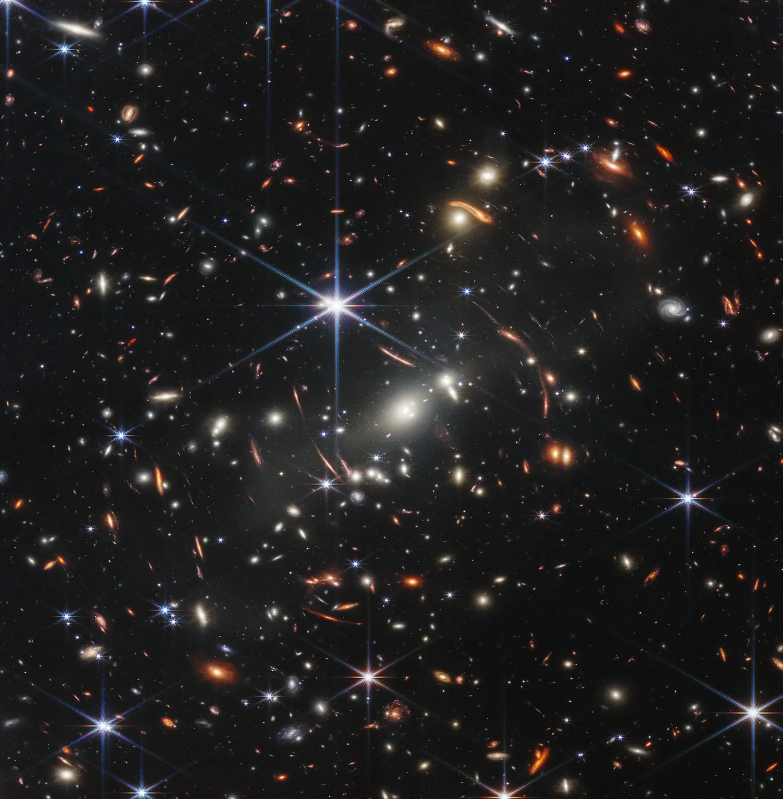

Fysiikka tieteenä ja maailmankaikkeuden mittasuhteet
Miksi fysiikka pystyy tutkimaan sekä protonia että koko maailmankaikkeutta, vaikka niiden koot ovat niin kaukana toisistaan?
Pohjatiedot
- Potenssit yläkoulun matematiikasta, esimerkiksi $10^{3} = 1000$ ja $10^{-2} = 0{,}01$
- Pituuden yksiköt metri, millimetri ja kilometri
Ydinpolku: etene vaiheiden mukaan. Ydinpolkuun kuuluvat laskujen lisäksi tutkimukset, selitykset ja kuvaajat. Valinnainen-merkityt tehtävät tarjoavat lisäharjoittelua. Valinnaisia tehtäviä 6.
Pohdinta
Fysiikka tutkii samoilla periaatteilla pienimpiä ja suurimpia rakenteita, joita tunnemme. Protonin koko on noin $1{,}7\cdot10^{-15}\,\text{m}$ ja havaittavan maailmankaikkeuden halkaisija noin $8{,}8\cdot10^{26}\,\text{m}$. Kumpaakaan ei voi nähdä paljain silmin eikä mitata metrimitalla, ja silti niiden koot tunnetaan.
Mistä osista aine koostuu, minkä suurempien rakenteiden osa Maa on, ja kuinka monta kymmenpotenssia pienimmän ja suurimman koon välillä on?
Valinnainen Kertaa yläkoulusta
Ennusta
Tee ennusteet ennen tutkimista 2 kysymystä
Ennuste 1: atomi ja sen ydin
Ennuste 2: Aurinkokunta ja Linnunrata
Tutki
Simulaatio
Käyttöohje
Valitse kohde valikosta Siirry kohteeseen, niin kuva liukuu mittakaavaan, jossa se on kooltaan lähin kohde. Painikkeet Lähennä $10$-kertaisesti ja Loitonna $10$-kertaisesti muuttavat näkymän leveyden kymmenesosaksi tai kymmenkertaiseksi. Kohteet seisovat rinnakkain koon mukaan: pienin vasemmalla, ja kuvaa suurempi kohde rajautuu kuvan reunaan. Muutaman pikselin kokoinen kohde on piste, josta viiva osoittaa sen nimeen. Voit myös vetää Näkymän leveys -liukusäädintä, vetää kuvaa sivusuunnassa tai napsauttaa kartan kohtaa. Käynnistä zoomaa automaattisesti, ja Suunta ja Nopeus valitsevat suunnan ja vauhdin. Kartan pisteet ovat kohteita, ja vaalea kaista näyttää, mitkä koot mahtuvat kuvaan nyt.
Mallin oletukset
Koot ovat pyöristettyjä suuruusluokka-arvoja, eivät tarkkoja mittaustuloksia. Arvot ovat kirjallisuudesta pyöristettyjä mallin arvoja: Planckin pituus on luonnonvakioista laskettu suure, astronominen yksikkö $1\,\text{AU}$ ja valovuosi ovat sovittuja määritelmiä, protonin ja atomin koot perustuvat sirontakokeisiin ja kvanttimekaniikan malliin, Linnunradan koko on arvio (noin $10^{5}$ valovuotta, epävarmuus kymmeniä prosentteja) ja maailmankaikkeuden halkaisija päätellään havainnoista kosmologisen mallin avulla. Hiuksen, punasolun, muurahaisen, kolikon, pallon, valaan ja ihmisen koot ovat tyypillisiä arvoja, ja yksilöt vaihtelevat. Kvarkin koko on havainnoista saatu yläraja. Vesimolekyylin koko on tyypillinen arvo, neutronitähden halkaisija on havaintoihin ja malleihin perustuva tyypillinen arvo (noin $20$–$25\,\text{km}$), ja Linnunradan keskustan mustan aukon Sgr A* kooksi on piirretty sen tapahtumahorisontin halkaisija, joka on laskettu sen massasta (noin $4{,}3$ miljoonaa Auringon massaa). Musta aukko ei ole kiinteä pallo: piirretty raja on tapahtumahorisontti, ja sen ympärillä hehkuva kaasu ja neutronitähden säteilykeilat ovat havainnollistuksia. Ytimien, atomien ja Kuun sekä Jupiterin koot ovat pyöristettyjä taulukkoarvoja. Piirrokset ovat havainnollistuksia. Planckin pituudella ruudukko on vain symboli, koska pituuden rakenteesta ei ole havaintoja. Vetyatomin elektronipilvi on todennäköisyyskuva, ja sen ydin on piirretty liian suureksi. Radoilla tähdet ja planeetat ovat suurennettuja pisteitä, ja ratojen kooksi on merkitty niiden säde, vaikka kuva piirretään halkaisijan mukaan. Linnunrata ja maailmankaikkeus ovat taiteilijan näkemyksiä.
Laskennan selitys
Näkymän leveys $W$ vastaa kuvassa $560$ pikseliä. Kohde, jonka koko on $d$, piirretään kuvaan leveydelle $\dfrac{d}{W}\cdot560$ pikseliä. Esimerkiksi kun näkymän leveys on $10^{-9}\,\text{m}$, vetyatomi on $\dfrac{1{,}1\cdot10^{-10}\,\text{m}}{10^{-9}\,\text{m}}\cdot560 \approx 62$ pikseliä leveä. Kohde näkyy, kun sen koko on noin $\dfrac{1}{1000}$–$3$ kertaa näkymän leveys: alle $4$ pikselin kohde on piste, ja kuvaa suurempi kohde rajautuu kuvan reunaan. Liukusäätimen luku on leveyden eksponentti: luku $-9$ tarkoittaa leveyttä $10^{-9}\,\text{m}$. Kun näkymä loitontuu kymmenkertaiseksi, kaikki kohteet pienenevät kymmenesosaan.
Zoomaa Planckin pituudesta havaittavaan maailmankaikkeuteen. Kaikki kuvaan mahtuvat kohteet näkyvät yhtä aikaa oikeassa kokosuhteessa, ja alareunan palkki näyttää, kuinka pitkä kymmenen potenssi metrejä on tällä mittakaavalla.
Koe 1: aineen portaat
Testaa ennuste 1. Alkutilassa kooltaan lähin kohde on vesimolekyyli. Paina Kirjaa mittaus. Valitse sitten valikosta Siirry kohteeseen vuorollaan vetyatomi, protoni ja kvarkki ja kirjaa rivi jokaisesta. Taulukon $n$ kertoo lähimmän kohteen suuruusluokan: kohteen koko on noin $10^{n}\,\text{m}$. Kvarkin arvo on yläraja.
Alkutila: $L$ = $-9$. Vakiona: ei mitään. Muutetaan: kohde.
| kohde | $n$ |
|---|
Käytä taulukon vetyatomin ja protonin rivejä. Montako suuruusluokkaa vetyatomi on ydintään suurempi?
Vihje 1: ohjaava kysymys
Taulukosta saat kummankin kohteen suuruusluokan eksponentin $n$. Vetyatomin ydin on yksi protoni.
Vihje 2: mikä yhteys
Laske, montako kymmenpotenssin askelta on protonin suuruusluokasta vetyatomin suuruusluokkaan. Askelten määrä on eksponenttien erotus, suuremmasta pienempi.
Vihje 3: välivaihe
Jos vetyatomin rivillä on $n = -10$ ja protonin rivillä $n = -15$, askelia on $-10 - (-15)$.
Näytä ratkaisu
Annettu
taulukosta vetyatomin rivillä $n_\text{atomi} = -10$ ja protonin eli vetyatomin ytimen rivillä $n_\text{protoni} = -15$
Kysytty
suuruusluokkien ero eli kymmenpotenssin askelten määrä atomin ja sen ytimen välillä
Periaate
Eksponentti $n$ kertoo, missä kymmenpotenssissa koko on. Jokainen askel kymmenpotenssista seuraavaan on kymmenkertainen koko, ja askelten määrä on eksponenttien erotus, suuremmasta pienempi.
Kaava
$\text{askelia} = n_\text{atomi} - n_\text{protoni}$
Muunnokset
Ei tarvita: eksponentit ovat yksiköttömiä lukuja.
Sijoitus
Vastaus
$5$
Suuruusluokkaa; luku on kokonaisluku, koska $n$ on pyöristetty kokonaiseksi kymmenpotenssiksi.
Järkevyys
Viisi askelta tarkoittaa noin $10^{5}$ eli satatuhatkertaista kokoa. Tarkka suhde on
joka on lähellä sitä. Ero on paljon pienempi kuin atomin ja ihmisen kymmenen suuruusluokkaa.
Lisää tutkittavaa 3 tehtävää
Koe 2: Maan osoite
Testaa ennuste 2. Alkutilassa kooltaan lähin kohde on Maa. Kirjaa rivi. Valitse sitten valikosta Siirry kohteeseen vuorollaan Aurinko, Neptunuksen radan säde ja Linnunrata ja kirjaa rivi jokaisesta. Halutessasi jatka havaittavaan maailmankaikkeuteen asti.
Alkutila: $L$ = $7{,}7$. Vakiona: ei mitään. Muutetaan: kohde.
| kohde | $n$ |
|---|
Valinnainen Valinnainen koe: missä on kokojen puoliväli?
Alkutilassa kooltaan lähin kohde on havaittava maailmankaikkeus. Kirjaa rivi. Valitse sitten valikosta Siirry kohteeseen Planckin pituus ja kirjaa toinen rivi. Laske kysymyksessä näiden puoliväli. Zoomaa sitten mallin kohteeseen, jonka koko on lähinnä tätä puoliväliä, ja kirjaa kolmas rivi: simulaatio näyttää, mikä kohde on keskellä. Arvaa ensin: onko ihminen kokojen keskellä?
Alkutila: $L$ = $27{,}5$. Vakiona: ei mitään. Muutetaan: kohde.
| kohde | $n$ |
|---|
Laske pienimmän ja suurimman kohteen $n$-arvojen keskiarvo eli puoliväli suuruusluokkien akselilla. Zoomaa sitten sen kohdalle, kirjaa kolmas rivi ja vastaa: mikä on simulaation lähimmän kohteen $n$?
Vihje 1: ohjaava kysymys
Valitse taulukosta Planckin pituuden ja maailmankaikkeuden rivit ja lue niiden $n$-arvot.
Vihje 2: mikä yhteys
Puoliväli on kahden luvun keskiarvo,
Käytä eksponentteja, älä kokoja metreinä.
Vihje 3: välivaihe
Jos $n_\text{min} = -35$ ja $n_\text{max} = 27$, niin $n_\text{keski} = \dfrac{-35 + 27}{2}$. Etsi sitten kohde, jonka koko on noin $10^{-4}\,\text{m}$, ja kirjaa kolmas rivi.
Näytä ratkaisu
Annettu
taulukosta Planckin pituuden rivillä $n_\text{min} = -35$ ja maailmankaikkeuden rivillä $n_\text{max} = 27$
Kysytty
puolivälin eksponentti $n_\text{keski}$
Periaate
Koot ovat monessa eri kymmenpotenssissa, joten "puolivälissä" tarkoittaa yhtä monta suuruusluokkaa kummastakin päästä. Se on eksponenttien keskiarvo, ei kokojen keskiarvo metreinä.
Kaava
Muunnokset
Ei tarvita: eksponentit ovat yksiköttömiä lukuja.
Sijoitus
Vastaus
$-4$
Eli koko noin $10^{-4}\,\text{m}$; kokonaisluku, koska eksponentit ovat kokonaislukuja. Kun zoomaat tähän, simulaation lähin kohde on hius, jonka $n = -4$: laskettu puoliväli ja simulaation kohde täsmäävät.
Järkevyys
Keskikohdasta on Planckin pituuteen $-4 - (-35) = 31$ suuruusluokkaa ja maailmankaikkeuteen $27 - (-4) = 31$ suuruusluokkaa, joten väli on symmetrinen. Koko $10^{-4}\,\text{m}$ on kymmenesosamillimetri, noin hiuksen paksuus.
Valinnainen Miten koot on saatu selville?
Mikään simulaation koko ei ole yhden mittanauhan tulos. Jokainen koko on päätelty mittauksista ja mallista, ja menetelmä vaihtelee mittakaavan mukaan.
- Protoni, $1{,}7\cdot10^{-15}\,\text{m}$: elektronien sironta protoneista ja atomien energiatasojen mittaus.
- Virus, $1{,}0\cdot10^{-7}\,\text{m}$: elektronimikroskooppi.
- Maa, $1{,}27\cdot10^{7}\,\text{m}$: geodeettiset mittaukset ja satelliitit.
- Maan radan säde (1 AU), $1{,}5\cdot10^{11}\,\text{m}$: tutkamittaus planeetoista ja luotaimista.
- Lähin tähti, $4{,}0\cdot10^{16}\,\text{m}$: tähden näennäinen siirtyminen, kun Maa kiertää Aurinkoa (paralaksi).
- Maailmankaikkeus, $8{,}8\cdot10^{26}\,\text{m}$: galaksien havainnot ja laajenemisen malli.
Teoria
Ydinajatus
Fysiikka rakentaa malleja ja testaa ne
Fysiikka on luonnontiede, joka etsii luonnosta säännönmukaisuuksia ja selittää ne malleilla. Malli on yksinkertaistettu kuvaus siitä, miten jokin ilmiö toimii. Mallista voi päätellä ennusteen, jonka mittaus voi kumota. Fysiikka ei siis nojaa siihen, kuka asian sanoo, vaan siihen, mitä kokeet ja mittaukset näyttävät.
Tutkimus etenee kierroksina. Havainto herättää kysymyksen, kysymykseen ehdotetaan mallia ja mallista johdetaan ennuste. Ennuste testataan kokeella, ja tulos joko tukee mallia tai pakottaa muuttamaan sitä. Mittaus antaa tuloksen lukuna ja yksikkönä: pituuden SI-yksikkö on metri, $\text{m}$.
Koot vaihtelevat kymmenpotenssien verran
Fysiikan kohteiden koot ovat valtavan erilaisia: protoni on noin $1{,}7\cdot10^{-15}\,\text{m}$ ja havaittava maailmankaikkeus noin $8{,}8\cdot10^{26}\,\text{m}$. Näin laajaa aluetta ei voi kirjoittaa tavallisina lukuina. Siksi käytetään kymmenpotenssimuotoa $a\cdot10^{n}$, jossa $1 \le a < 10$ ja $n$ on kokonaisluku. Kun eksponentti $n$ kasvaa yhdellä, luku kymmenkertaistuu. Planckin pituus, noin $1{,}6\cdot10^{-35}\,\text{m}$, on mittakaava, jota pienemmillä etäisyyksillä fyysikoiden mukaan nykyiset teoriat eivät enää toimi. Sitä ei ole mitattu suoraan, vaan se on laskettu luonnonvakioista.
Suuruusluokka kertoo karkean koon
Suuruusluokka on se kymmenpotenssi, joka on kymmenpotenssien akselilla lähinnä lukua. Luvun $a\cdot10^{n}$ suuruusluokka on $10^{n}$, kun $a$ on alle noin 3, ja $10^{n+1}$, kun $a$ on yli noin 3. Ihmisen pituus $1{,}7\,\text{m}$ on suuruusluokkaa $10^{0}\,\text{m}$, mutta Mount Everestin korkeus $8{,}8\cdot10^{3}\,\text{m}$ on suuruusluokkaa $10^{4}\,\text{m}$.
Kohteiden koot ovat pyöristettyjä arvoja: ihmiset, muurahaiset ja galaksit eivät ole kaikki samankokoisia. Siksi vertailuun riittää usein suuruusluokka, ja luvuista kannattaa kysyä, kuinka tarkkoja ne ovat.
Kuinka monta kertaa suurempi?
Kun halutaan tietää, kuinka monta kertaa jokin on toista suurempi, suurempi koko jaetaan pienemmällä:
$$k = \frac{d_\text{suurempi}}{d_\text{pienempi}}$$
Tässä $k$ on kokojen suhde eli se, kuinka monta kertaa suurempi kohde on. Kummankin koon on oltava samassa yksikössä. Silloin yksikkö supistuu pois, ja $k$ on pelkkä luku.
Kymmenpotenssien avulla suhteen voi arvioida myös päässä. Jokainen askel kymmenpotenssista seuraavaan on kymmenkertainen koko. Vetyatomi on suuruusluokkaa $10^{-10}\,\text{m}$ ja protoni $10^{-15}\,\text{m}$. Niiden välissä on viisi askelta, joten atomi on noin $10\cdot10\cdot10\cdot10\cdot10 = 10^{5}$ eli satatuhatta kertaa protonia suurempi. Askelten määrä on eksponenttien erotus: $-10-(-15) = 5$.
Valovuosi on pituuden yksikkö
Tähtien väliset etäisyydet ovat niin suuria, että metri on epäkäytännöllinen. Valovuosi on matka, jonka valo kulkee tyhjiössä yhdessä vuodessa, noin $9{,}46\cdot10^{15}\,\text{m}$. Se on siis pituus eikä aika. Valon kulkuaikoja ja tähtitieteen pituusyksiköitä käsitellään tarkemmin luvussa Suureet, yksiköt ja SI-järjestelmä.
Aineen rakenne
Aine koostuu sisäkkäisistä rakenteista
Kaikki ympärillämme oleva aine koostuu atomeista. Atomit voivat liittyä toisiinsa molekyyleiksi: vesimolekyylissä on yksi happiatomi ja kaksi vetyatomia. Jokaisen atomin keskellä on pieni atomiydin, ja sen ympärillä liikkuu elektroneja. Ydin koostuu protoneista ja neutroneista, ja kumpikin niistä koostuu kolmesta kvarkista. Kvarkit ja elektroni ovat alkeishiukkasia: niillä ei tiettävästi ole pienempiä osia, eikä niille ole mitattu kokoa. Kokeiden mukaan ne ovat pienempiä kuin noin $10^{-18}\,\text{m}$.
Atomi on ydintään kymmeniätuhansia kertoja suurempi
Atomin halkaisija on noin $10^{-10}\,\text{m}$, mutta ytimen vain $10^{-15}$–$10^{-14}\,\text{m}$. Suuruusluokkia niiden välillä on neljä tai viisi, joten atomi on kymmeniätuhansia kertoja ydintään suurempi. Jos atomi suurennettaisiin jalkapallostadionin kokoiseksi, ydin olisi sen keskellä herneen kokoinen. Silti ytimessä on yli 99,9 prosenttia atomin massasta. Atomin koon määrää elektronien liikkumisalue, ja ydin on sen keskellä pieni ja hyvin tiheä. Vetyatomin ydin on yksi protoni.
Maailmankaikkeuden rakenteet
Maan osoite maailmankaikkeudessa
Maa on planeetta: se kiertää tähteä eli Aurinkoa, ja Kuu kiertää Maata. Tähti on kuuma kaasupallo, joka tuottaa itse valonsa ytimessään tapahtuvissa ydinreaktioissa. Planeetta ei tuota valoa, vaan se näkyy, koska se heijastaa tähtensä valoa. Aurinko, sen kahdeksan planeettaa kuineen sekä kääpiöplaneetat, asteroidit ja komeetat muodostavat Aurinkokunnan. Se on yksi planeettakunta monien joukossa: muita tähtiä kiertäviä planeettoja tunnetaan jo tuhansia.
Aurinko on yksi Linnunradan sadoista miljardeista tähdistä. Linnunrata on galaksi eli painovoiman koossa pitämä valtava joukko tähtiä, kaasua ja pölyä, ja sen halkaisija on noin $10^{5}$ valovuotta. Galakseja on havaittavassa maailmankaikkeudessa arviolta satoja miljardeja. Ne muodostavat galaksiryhmiä ja suurempia galaksijoukkoja: Linnunrata ja Andromedan galaksi kuuluvat Paikalliseen ryhmään. Ryhmät ja joukot muodostavat superjoukkoja, ja suurimmassa mittakaavassa galaksit ovat verkon kaltaisissa säikeissä, joiden välissä on lähes tyhjiä alueita.
Aurinkokunnan reuna riippuu siitä, mitä mitataan
Aurinkokunnalla ei ole yhtä tarkkaa reunaa. Auringosta virtaa hiukkasia, aurinkotuulta, joka puhaltaa ympärilleen kuplan, heliosfäärin. Sen raja, heliopaussi, on noin $120\,\text{AU}$:n päässä Auringosta, ja Voyager-luotaimet ovat ylittäneet sen. Auringon painovoima hallitsee kuitenkin paljon kauempana. Pitkäjaksoisten komeettojen radoista päätellään, että Aurinkoa kiertää kaukana komeettojen parvi, Oortin pilvi, noin $2000$–$100\,000\,\text{AU}$:n päässä. Voyagerit ovat siis tähtienvälisessä avaruudessa mutta yhä Auringon painovoiman piirissä.
Kohdetyyppejä, ei portaita
Kaikki tähtitieteelliset kohteet eivät ole portaita samassa sisäkkäisyydessä, vaan ne ovat galaksien sisällä tähtien joukossa. Sumu on kaasu- ja pölypilvi; esimerkiksi Orionin sumussa syntyy uusia tähtiä. Neutronitähti on jäänne raskaan tähden räjähdyksestä. Sen massa on tavallisesti suurempi kuin Auringon, mutta halkaisija vain noin $20$–$25\,\text{km}$, koska aine on puristunut lähes pelkiksi neutroneiksi.
Musta aukko on alue, josta painovoiman takia mikään, ei edes valo, pääse ulos. Sillä ei ole pintaa: sen kooksi ilmoitetaan rajan eli tapahtumahorisontin halkaisija, joka kasvaa massan mukana. Linnunradan keskustan mustan aukon massa on noin neljä miljoonaa Auringon massaa ja tapahtumahorisontin halkaisija noin $2{,}5\cdot10^{10}\,\text{m}$. Koko ei siis kerro kohteen tyyppiä: neutronitähti on Maata pienempi, ja tämä musta aukko on Aurinkoa suurempi.
Havaittava maailmankaikkeus ei ole koko maailmankaikkeus
Havaittava maailmankaikkeus on se osa maailmankaikkeutta, josta valo on ehtinyt tulla meille maailmankaikkeuden noin 13,8 miljardin vuoden iän aikana. Sen halkaisija on noin $8{,}8\cdot10^{26}\,\text{m}$ eli noin 93 miljardia valovuotta. Luku on suurempi kuin kaksi kertaa 13,8 miljardia valovuotta, koska avaruus on laajentunut valon matkan aikana. Havaittavan maailmankaikkeuden raja ei ole maailmankaikkeuden reuna vaan näköpiirimme raja: toisessa galaksissa olevan havaitsijan havaittava maailmankaikkeus on pallo hänen ympärillään. Koko maailmankaikkeuden kokoa ei tiedetä, ja se voi olla ääretön.

Perusvuorovaikutukset
Neljä perusvuorovaikutusta
Rakenteet pysyvät koossa ja muuttuvat vuorovaikutusten takia. Kaikki tunnetut vuorovaikutukset palautuvat neljään perusvuorovaikutukseen:
- Gravitaatio vaikuttaa kaikkien kappaleiden välillä, joilla on massa, ja se on aina vetävä. Se pitää Kuun Maan ympärillä ja planeetat radoillaan tähtiensä ympärillä, ja se kokoaa kaasupilvistä tähtiä ja galakseja.
- Sähkömagneettinen vuorovaikutus vaikuttaa sähköisesti varattujen hiukkasten välillä: erimerkkiset varaukset vetävät ja samanmerkkiset hylkivät toisiaan. Se pitää elektronit atomissa ytimen ympärillä, sitoo atomit molekyyleiksi ja aiheuttaa sähköiset ja magneettiset ilmiöt, kuten hangatun ilmapallon kyvyn vetää paperisilppuja.
- Vahva vuorovaikutus sitoo kvarkit protoneiksi ja neutroneiksi. Sen jäännösvaikutus pitää protonit ja neutronit yhdessä ytimessä, vaikka protonit hylkivät toisiaan sähköisesti. Se ulottuu vain ytimen kokoiselle etäisyydelle, noin $10^{-15}\,\text{m}$.
- Heikko vuorovaikutus aiheuttaa eräitä radioaktiivisia hajoamisia. Esimerkiksi beetahajoamisessa ytimen neutroni muuttuu protoniksi, ja ytimestä lähtee elektroni ja hiukkanen nimeltä antineutriino. Heikko vuorovaikutus on mukana myös Auringon energiantuotannossa.
Mittakaava ratkaisee, mikä vuorovaikutus hallitsee
Samat neljä vuorovaikutusta toimivat kaikkialla, ytimen sisältä galaksijoukkoihin, mutta mittakaava ratkaisee, mikä niistä hallitsee. Vahva ja heikko vuorovaikutus ulottuvat vain ytimen mittakaavaan. Sähkömagneettinen vuorovaikutus on hiukkasten välillä valtavasti gravitaatiota voimakkaampi, mutta suuret kappaleet ovat lähes neutraaleja: niiden positiiviset ja negatiiviset varaukset kumoavat toistensa vaikutuksen. Gravitaatio on hiukkasten välillä heikoin, mutta se on aina vetävä ja kasvaa massan mukana. Siksi planeettojen, tähtien ja galaksien mittakaavassa gravitaatio hallitsee.
Yleinen virhekäsitys
Kymmenpotenssien ero ei ole kokojen ero. Jos kahden kohteen suuruusluokat eroavat kuudella, toinen ei ole kuusi kertaa suurempi vaan $10^{6}$ eli miljoona kertaa suurempi. Lisäksi mittakaavakuva voi näyttää tosi vain yhden mittakaavan kerrallaan: kaikkea ei voi piirtää samaan kuvaan oikeassa suhteessa.
Neutronitähti ja musta aukko eivät ole galaksia suurempia portaita, vaan kohteita galaksien sisällä. Musta aukko ei myöskään ime kaikkea ympäriltään: kaukana siitä sen painovoima on sama kuin minkä tahansa yhtä suuren massan, ja tähdet voivat kiertää sitä kuten planeetat Aurinkoa.
Tiivistelmä
- Fysiikka rakentaa malleja, joista johdetaan ennusteita, ja koe tai mittaus ratkaisee, kestääkö malli.
- Kymmenpotenssimuoto $a\cdot10^{n}$ kirjoittaa hyvin pienet ja hyvin suuret luvut lyhyesti; yksi askel eksponentissa on kymmenkertainen koko.
- Suuruusluokka on kymmenpotenssien akselilla lähin kymmenpotenssi. Kokojen suhde saadaan jakamalla suurempi koko pienemmällä, ja jokainen kymmenpotenssin askel on kymmenkertainen koko.
- Valovuosi on matka, jonka valo kulkee vuodessa, noin $9{,}46\cdot10^{15}\,\text{m}$.
- Molekyylit koostuvat atomeista, atomit ytimestä ja elektroneista, ydin protoneista ja neutroneista ja nämä kvarkeista. Atomi on kymmeniätuhansia kertoja ydintään suurempi.
- Maa on planeetta, joka kiertää tähteä. Aurinkokunta on yksi planeettakunta Linnunradassa, ja Linnunrata on yksi havaittavan maailmankaikkeuden sadoista miljardeista galakseista.
- Sumut, neutronitähdet ja mustat aukot ovat kohteiden tyyppejä galaksien sisällä, eivät rakenteiden portaita.
- Neljä perusvuorovaikutusta ovat gravitaatio, sähkömagneettinen, vahva ja heikko vuorovaikutus. Pienissä mittakaavoissa hallitsevat ytimen ja atomin vuorovaikutukset, suurissa gravitaatio.
Palaa ennusteisiisi
Vertaa ennusteitasi simulaation lukemiin. Kuinka suuri ero atomin ja sen ytimen välillä on, ja miten Aurinkokunta, Linnunrata ja havaittava maailmankaikkeus liittyvät toisiinsa? Mikä kokojen ero yllätti sinut eniten? Palaa myös alun kysymykseen: protonista havaittavaan maailmankaikkeuteen on noin $27-(-15) = 42$ suuruusluokkaa ja Planckin pituudesta noin 62.
Muuttaisitko ennustettasi?
Esimerkit
Kun olet opiskellut luvun teorian, siirry ohjattuihin esimerkkeihin. Ensimmäisessä seuraat mallilaskua vaihe vaiheelta, seuraavissa teet valinnat itse, ja vihjeet auttavat, jos jäät jumiin.
Esimerkki 1: Vetyatomi ja protoni
Vetyatomin halkaisija on noin $1{,}1\cdot10^{-10}\,\text{m}$ ja protonin halkaisija noin $1{,}7\cdot10^{-15}\,\text{m}$. Kuinka monta kertaa vetyatomi on protonia suurempi, ja kuinka monta kymmenpotenssia niiden suuruusluokkien välillä on?
Vaihe 1/7
Tunnetut ja kysytty. Vetyatomin halkaisija $d_\text{atomi} = 1{,}1\cdot10^{-10}\,\text{m}$ ja protonin halkaisija $d_\text{protoni} = 1{,}7\cdot10^{-15}\,\text{m}$. Kysytään kokojen suhdetta $k$ ja kymmenpotenssien askelten määrää.
Vaihe 2/7
Periaate. Kysymys "kuinka monta kertaa suurempi" on jakolasku: suurempi koko jaetaan pienemmällä. Askelten määrä on suuruusluokkien eksponenttien erotus.
Vaihe 3/7
Kaava ratkaistuna. $$k = \frac{d_\text{atomi}}{d_\text{protoni}}$$
Vaihe 4/7
Yksikkömuunnokset. Ei tarvita: molemmat koot ovat metreinä, joten yksikkö supistuu pois ja $k$ on pelkkä luku.
Vaihe 5/7
Sijoitus. $$\begin{aligned} k &= \frac{d_\text{atomi}}{d_\text{protoni}} \\ &= \frac{1{,}1\cdot10^{-10}\,\text{m}}{1{,}7\cdot10^{-15}\,\text{m}} \\ &= 6{,}47\ldots\cdot10^{4} \\ &\approx 6{,}5\cdot10^{4} \end{aligned}$$
Laskimella jakolasku $1{,}1\cdot10^{-10} : 1{,}7\cdot10^{-15}$ tehdään kirjoittamalla kymmenpotenssit kymmenpotenssinäppäimellä, jonka nimi on usein EE tai EXP.
Vaihe 6/7
Tulos. Vetyatomi on noin $6{,}5\cdot10^{4}$ eli noin 65 000 kertaa protonia suurempi. Tulos on annettu kahdella merkitsevällä numerolla kuten lähtötiedot. Suuruusluokat ovat $10^{-10}\,\text{m}$ ja $10^{-15}\,\text{m}$, joten askelia on $-10 - (-15) = 5$.
Vaihe 7/7
Järkevyys. Viisi askelta tarkoittaa noin $10^{5}$ eli satatuhatkertaista kokoa, ja $6{,}5\cdot10^{4}$ on lähellä sitä. Suuruusluokkatarkistus: jos protoni suurennettaisiin millimetrin kokoiseksi, atomi olisi $65\,000\,\text{mm} = 65\,\text{m}$ eli noin kymmenien metrien luokkaa.
Esimerkki 2: Tunnista kohde
Esimerkki 3: Mikä vuorovaikutus?
Valinnainen Esimerkki 4: Etsi virhe
Valinnainen Esimerkki 5: Maan koko mitataan
Kaksi mittaajaa seisoo samalla pohjois–etelä-suoralla etäisyyden $8{,}0\cdot10^{2}\,\text{km}$ päässä toisistaan. Keskipäivällä Aurinko on toisen kohdalla suoraan pään päällä, mutta toisen mittaajan pystysuora tikku heittää varjon, joka kertoo, että Auringon säde on $7{,}2^\circ$ kulmassa tikkuun nähden. Aurinko on niin kaukana, että sen säteet ovat yhdensuuntaiset, joten kulma $7{,}2^\circ$ on myös mittaajien välinen kaarikulma Maan keskipisteestä. Maa on pallo.
Mikä on Maan halkaisija? Vastaa kilometreinä.
Vihje 1: ohjaava kysymys
Koko maapallon ympäri kaarikulma on $360^\circ$. Montako kertaa kulma $7{,}2^\circ$ mahtuu siihen?
Vihje 2: mikä yhteys
Ympärysmitta on
missä $s$ on mittaajien välimatka. Halkaisija saadaan ympyrän ympärysmitasta $C = \pi d$.
Vihje 3: välivaihe
$\dfrac{360^\circ}{7{,}2^\circ} = 50$, joten $C = 50\cdot8{,}0\cdot10^{2}\,\text{km}$. Sitten $d = \dfrac{C}{\pi}$.
Näytä ratkaisu
Annettu
mittaajien välimatka $s = 8{,}0\cdot10^{2}\,\text{km}$ ja kaarikulma $\alpha = 7{,}2^\circ$; Maa on pallo
Kysytty
Maan halkaisija $d$ kilometreinä
Periaate
Mittaajien väli on yhtä suuri osa ympärysmitasta kuin kulma $7{,}2^\circ$ on koko kierroksesta $360^\circ$. Ympärysmitasta halkaisija saadaan, koska ympyrän ympärysmitta on $\pi$ kertaa halkaisija.
Kaava
joten $C = \dfrac{360^\circ}{\alpha}\,s$, ja $C = \pi d$, joten
Muunnokset
Ei tarvita: välimatka on jo kilometreinä ja kulmat samassa yksikössä (asteina), joten kulmayksiköt supistuvat pois.
Sijoitus
Vastaus
$1{,}3\cdot10^{4}\,\text{km}$
Eli noin $13\,000\,\text{km}$, kaksi merkitsevää numeroa kuten annetuissa mitoissa (kenttään sopii $12\,700$).
Järkevyys
Tunnettu Maan halkaisija on $1{,}27\cdot10^{7}\,\text{m} = 1{,}27\cdot10^{4}\,\text{km}$, ja tulos täsmää. Ympärysmitta $4{,}0\cdot10^{4}\,\text{km}$ on suuruusluokkaa $10^{4}\,\text{km}$, mikä vastaa maapallon kokoa.
Kertaa luvun käsitteet
Jos valitset Kertaa myöhemmin, kortti siirtyy kertauspakkaasi.
- Fysiikka
- Kokeellinen luonnontiede, joka tutkii luonnon perusilmiöitä, rakenteita ja niitä kuvaavia lainalaisuuksia.
- Empiirinen tiede
- Tieto perustuu havaintoihin, mittauksiin ja kokeisiin.
- Luonnontieteellinen menetelmä
- Havaintoja, oletuksia, kokeita ja malleja yhdistävä tapa rakentaa luotettavaa tietoa.
- Hypoteesi
- Perusteltu oletus, jota voidaan testata kokeellisesti.
- Fysiikan teoria
- Laaja selityskokonaisuus, joka yhdistää havaintoja ja mahdollistaa uusien ilmiöiden ennustamisen.
- Malli
- Yksinkertaistettu kuvaus todellisuudesta, jolla selitetään ilmiöitä tai tehdään ennusteita.
- Pätevyysalue
- Olosuhteet ja rajat, joissa mallia voidaan käyttää luotettavasti.
- Alkeishiukkanen
- Aineen pienimpiä tunnettuja rakenneosia, joihin kuuluvat kvarkit ja leptonit.
- Kvarkki
- Protonien ja neutronien rakenneosa, joita näkyvässä aineessa ovat erityisesti ylös- ja alas-kvarkit.
- Leptoni
- Perushiukkasten ryhmä, johon esimerkiksi elektroni kuuluu.
- Protoni
- Positiivisesti varautunut atomin ytimen rakenneosa, joka koostuu kvarkeista.
- Neutroni
- Sähköisesti neutraali atomin ytimen rakenneosa, joka koostuu kvarkeista.
- Atomiydin
- Tiivis keskiosa, jossa protonit ja neutronit sijaitsevat.
- Atomi
- Ytimen ja sitä ympäröivien elektronien muodostama aineen rakenneosa.
- Molekyyli
- Kahden tai useamman atomin muodostama sitoutunut kokonaisuus.
- Aurinkokunta
- Tähti ja sitä kiertävät planeetat, pienkappaleet sekä muu aine.
- Galaksi
- Valtava tähtien, kaasun, pölyn ja muun aineen gravitaation sitoma järjestelmä.
- Galaksijoukko
- Useiden galaksien gravitaation sitoma suuri rakenne.
- Neutronitähti
- Raskaan tähden luhistumisessa syntyvä erittäin tiheä jäännös, joka koostuu pääosin neutroneista.
- Musta aukko
- Erittäin tiheä massakeskittymä, jonka gravitaatio on niin voimakas, ettei valokaan pääse pois.
Tehtävät
Taso 1 · perusharjoitus 9 tehtävää
Yksi kaava tai yksi päättelyaskel. Ydintehtävät ensin, loput lisäharjoitusta.
- Tehtävä 1-1
Punasolun halkaisija on $7{,}5\cdot10^{-6}\,\text{m}$. Kuinka monta mikrometriä se on? Yksi mikrometri on $1\,\mu\text{m} = 10^{-6}\,\text{m}$.
Vastaus
$7{,}5\,\mu\text{m}$
Näytä ratkaisu
Annettu
halkaisija $d = 7{,}5\cdot10^{-6}\,\text{m}$ ja $1\,\mu\text{m} = 10^{-6}\,\text{m}$
Kysytty
halkaisija $d$ mikrometreinä, yksikössä $\mu\text{m}$
Periaate
Mikrometri on miljoonasosa metristä: $1\,\mu\text{m} = 10^{-6}\,\text{m}$. Kun pituus on kirjoitettu muotoon $a\cdot10^{-6}\,\text{m}$, osan $10^{-6}\,\text{m}$ voi korvata yksiköllä $\mu\text{m}$.
Kaava
$10^{-6}\,\text{m} = 1\,\mu\text{m}$
Muunnokset
Halkaisija on jo valmiiksi muodossa $7{,}5\cdot10^{-6}\,\text{m}$, joten muuta muokkausta ei tarvita.
Sijoitus
$d$$= 7{,}5\cdot10^{-6}\,\text{m}$$= 7{,}5\cdot1\,\mu\text{m}$$= 7{,}5\,\mu\text{m}$Vastaus
$7{,}5\,\mu\text{m}$
Kaksi merkitsevää numeroa kuten annetussa halkaisijassa.
Järkevyys
Mikrometri on tuhannesosa millimetristä, joten $7{,}5\,\mu\text{m} = 0{,}0075\,\text{mm}$. Punasolu on siis paljon hiusta ohuempi ja näkyy vain mikroskoopilla, mikä sopii tuttuun tietoon.
- Tehtävä 1-2Ydintehtävä
Kuvassa on koon $d$ kymmenpotenssiakseli, jolle on merkitty vetyatomi ja muurahainen. Montako suuruusluokkaa niiden koon välillä on?
Vastaus
$8$
Näytä ratkaisu
Annettu
kuva, jossa vetyatomi ja muurahainen on merkitty koon $d$ kymmenpotenssiakselille
Kysytty
suuruusluokkien ero eli kymmenpotenssin askelten määrä
Periaate
Akselilla jokainen viiva on kymmenpotenssi, ja yksi askel oikealle on kymmenkertainen koko. Kohteen suuruusluokan eksponentti luetaan sen kohdalla olevasta viivasta, ja askelten määrä on eksponenttien erotus.
Kuvaajan lukeminen
Vetyatomin merkki on viivalla $10^{-10}\,\text{m}$, joten $n_\text{atomi} = -10$. Muurahaisen merkki on viivalla $10^{-2}\,\text{m}$, joten $n_\text{muurahainen} = -2$.
Kaava
$\text{askelia} = n_\text{muurahainen} - n_\text{atomi}$
Muunnokset
Ei tarvita: eksponentit ovat lukuja, joilla ei ole yksikköä.
Sijoitus
$\text{askelia}$$= -2 - (-10)$$= -2 + 10$$= 8$Vastaus
$8$
Suuruusluokkaa; luku on kokonaisluku, koska merkit ovat tasan viivoilla.
Järkevyys
Merkkien välissä on kuvassa kahdeksan väliä, joten kahdeksan askelta täsmää. Kahdeksan askelta tarkoittaa noin $10^{8}$ eli sata miljoonaa kertaa suurempaa kokoa. Muurahainen on selvästi atomia isompi, joten positiivinen ero on järkevä.
- Tehtävä 1-3
Maan halkaisija on $1{,}27\cdot10^{7}\,\text{m}$. Anna se kilometreinä.
Vastaus
$12\,700\,\text{km}$
Näytä ratkaisu
Annettu
$d = 1{,}27\cdot10^{7}\,\text{m}$ ja $1\,\text{km} = 1000\,\text{m} = 10^{3}\,\text{m}$
Kysytty
halkaisija $d$ kilometreinä, yksikössä $\text{km}$
Periaate
Kilometri on tuhat metriä, $1\,\text{km} = 10^{3}\,\text{m}$. Kirjoitetaan pituus muotoon, jossa on tekijä $10^{3}\,\text{m}$, ja korvataan se yksiköllä $\text{km}$.
Kaava
$10^{3}\,\text{m} = 1\,\text{km}$
Muunnokset
$10^{7} = 10^{4}\cdot10^{3}$, joten $1{,}27\cdot10^{7}\,\text{m} = 1{,}27\cdot10^{4}\cdot10^{3}\,\text{m}$.
Sijoitus
$d$$= 1{,}27\cdot10^{4}\cdot10^{3}\,\text{m}$$= 1{,}27\cdot10^{4}\,\text{km}$$= 12\,700\,\text{km}$Vastaus
$12\,700\,\text{km}$
Eli $1{,}27\cdot10^{4}\,\text{km}$, kolme merkitsevää numeroa kuten annetussa halkaisijassa.
Järkevyys
Maan ympärysmitta on noin $40\,000\,\text{km}$, ja halkaisija on ympärysmitta jaettuna luvulla $\pi \approx 3{,}14$, siis noin $12\,700\,\text{km}$. Tulos täsmää.
- Tehtävä 1-4Ydintehtävä
Lyijyatomin halkaisija on noin $3{,}5\cdot10^{-10}\,\text{m}$ ja sen ytimen halkaisija noin $1{,}4\cdot10^{-14}\,\text{m}$. Kuinka monta kertaa atomi on ydintään suurempi?
Vastaus
$25\,000$
Näytä ratkaisu
Annettu
lyijyatomin halkaisija $d_\text{atomi} = 3{,}5\cdot10^{-10}\,\text{m}$ ja sen ytimen halkaisija $d_\text{ydin} = 1{,}4\cdot10^{-14}\,\text{m}$
Kysytty
kokojen suhde $k$ (kuinka monta kertaa atomi on ydintään suurempi)
Periaate
Kysymys ”kuinka monta kertaa suurempi” on jakolasku: suurempi koko jaetaan pienemmällä.
Kaava
$k$$= \dfrac{d_\text{atomi}}{d_\text{ydin}}$Muunnokset
Ei tarvita: molemmat halkaisijat ovat metreinä, joten yksiköt supistuvat ja $k$ on pelkkä luku.
Sijoitus
$k$$= \dfrac{3{,}5\cdot10^{-10}\,\text{m}}{1{,}4\cdot10^{-14}\,\text{m}}$$= 2{,}5\cdot10^{4}$Vastaus
$25\,000$
Kertaa eli $2{,}5\cdot10^{4}$; kaksi merkitsevää numeroa kuten annetuissa halkaisijoissa.
Järkevyys
Suuruusluokat ovat $10^{-10}\,\text{m}$ ja $10^{-14}\,\text{m}$. Niiden välissä on neljä kymmenpotenssin askelta, joten suhteen pitää olla noin $10^{4}$, ja $2{,}5\cdot10^{4}$ on sitä lähellä. Lyijyn ydin on suuri, koska siinä on yli 200 protonia ja neutronia, joten ero atomiin on pienempi kuin vedyllä ($6{,}5\cdot10^{4}$).
- Tehtävä 1-5
Hiuksen paksuus on $7{,}0\cdot10^{-5}\,\text{m}$ ja punasolun halkaisija $7{,}5\cdot10^{-6}\,\text{m}$. Kuinka monta kertaa hius on punasolua paksumpi?
Vastaus
$9{,}3$
Näytä ratkaisu
Annettu
hiuksen paksuus $d_\text{hius} = 7{,}0\cdot10^{-5}\,\text{m}$ ja punasolun halkaisija $d_\text{punasolu} = 7{,}5\cdot10^{-6}\,\text{m}$
Kysytty
kokojen suhde $k$ (kuinka monta kertaa hius on paksumpi)
Periaate
Kysymys ”kuinka monta kertaa suurempi” on jakolasku: suurempi koko jaetaan pienemmällä.
Kaava
$k$$= \dfrac{d_\text{hius}}{d_\text{punasolu}}$Muunnokset
Ei tarvita: molemmat pituudet ovat metreinä, joten yksiköt supistuvat ja $k$ on pelkkä luku.
Sijoitus
$k$$= \dfrac{7{,}0\cdot10^{-5}\,\text{m}}{7{,}5\cdot10^{-6}\,\text{m}}$$= 9{,}33$Vastaus
$9{,}3$
Kertaa; kaksi merkitsevää numeroa kuten annetuissa mitoissa (kenttään sopii $9{,}33$).
Järkevyys
Suuruusluokat ovat $10^{-4}\,\text{m}$ ja $10^{-5}\,\text{m}$, joten ero on yksi suuruusluokka eli noin kymmenkertainen. Tulos $9{,}3$ on lähellä kymmentä, joten se on järkevä.
- Tehtävä 1-6
Fysiikassa havainnot ja mallit ovat eri asioita. Esimerkiksi havainto on, että pudotettu kivi osuu maahan nopeammin kuin pudotettu höyhen. Mikä seuraavista erottaa fysikaalisen mallin pelkästä havainnosta?
Vastaus
Mallista voi päätellä ennusteen uuteen tilanteeseen, ja ennusteen voi testata mittauksella.
Näytä ratkaisu
Kysytty
mikä erottaa fysikaalisen mallin pelkästä havainnosta.
Periaate
Havainto kertoo, mitä yksittäisessä tilanteessa tapahtui. Malli on yksinkertaistettu kuvaus ilmiöstä, ja siitä voi päätellä ennusteita myös tilanteisiin, joita ei ole vielä tutkittu. Koska fysiikka nojaa kokeisiin, ennuste testataan mittauksella, ja malli pätee vain oloissa, joissa se on testattu.
Mallivastaus
Mallista voi päätellä ennusteen uuteen tilanteeseen, ja ennusteen voi testata mittauksella. Malli on yksinkertaistettu kuvaus, ja koe tai mittaus ratkaisee, kestääkö se. Kiven ja höyhenen putoaminen on havainto. Malli, jossa ilmanvastus jätetään pois, ennustaa kappaleiden putoamisen, ja se pätee vain, kun ilmanvastus on pieni. Malli ei ole toistettu havainto, muuttumaton teoria eikä täydellinen totuus: jos huolellinen mittaus poikkeaa ennusteesta, mallia korjataan tai sen voimassaolo rajataan.
- Tehtävä 1-7
Kuun etäisyys Maasta on keskimäärin $3{,}84\cdot10^{8}\,\text{m}$. Valon kulkuaika on matka jaettuna nopeudella, $t = s/c$. Kuinka kauan valolta kuluu matkaan Maasta Kuuhun, kun valon nopeus on $c = 2{,}998\cdot10^{8}\,\text{m/s}$?
Vastaus
$1{,}28\,\text{s}$
Näytä ratkaisu
Annettu
etäisyys $s = 3{,}84\cdot10^{8}\,\text{m}$ ja valon nopeus $c = 2{,}998\cdot10^{8}\,\text{m/s}$
Kysytty
valon kulkuaika $t$ sekunteina
Periaate
Valo kulkee tyhjiössä tasaisella nopeudella, joten kulkuaika on matka jaettuna nopeudella.
Kaava
$s = c\,t$, joten $t = \dfrac{s}{c}$
Muunnokset
Ei tarvita: matka on metreinä ja nopeus metreinä sekunnissa, joten tulos tulee sekunteina.
Sijoitus
$t$$= \dfrac{3{,}84\cdot10^{8}\,\text{m}}{2{,}998\cdot10^{8}\,\text{m/s}}$$= 1{,}2808\,\text{s}$Vastaus
$1{,}28\,\text{s}$
Kolme merkitsevää numeroa kuten annetuissa tiedoissa.
Järkevyys
Kymmenpotenssit $10^{8}\,\text{m}$ ja $10^{8}\,\text{m/s}$ supistuvat, ja jäljelle jää noin $3{,}8 : 3{,}0 \approx 1{,}3$ sekuntia. Kuun valo on siis noin sekunnin vanhaa, ja valo kiertäisi Maan ympäri ($4{,}0\cdot10^{7}\,\text{m}$) noin $0{,}13\,\text{s}$:ssa, joten Kuu on selvästi kauempana.
- Tehtävä 1-8
Hiekanjyvän halkaisijan suuruusluokka on $10^{-3}\,\text{m}$ ja viruksen halkaisijan suuruusluokka $10^{-7}\,\text{m}$. Kuinka monta kertaa suurempi hiekanjyvä on viruksesta suuruusluokkien perusteella?
Vastaus
$10\,000$
Näytä ratkaisu
Annettu
hiekanjyvän suuruusluokka $10^{-3}\,\text{m}$ ja viruksen suuruusluokka $10^{-7}\,\text{m}$
Kysytty
kokojen suhde $k$ eli kuinka monta kertaa suurempi hiekanjyvä on
Periaate
Suuruusluokat ovat kymmenpotensseja, ja jokainen askel kymmenpotenssista seuraavaan on kymmenkertainen koko. Kun askelia on $n_1 - n_2$, suhde on $10^{n_1 - n_2}$, ei $n_1 - n_2$.
Kaava
$k$$= \dfrac{10^{n_\text{hiekka}}}{10^{n_\text{virus}}}$$= 10^{\,n_\text{hiekka} - n_\text{virus}}$Muunnokset
Ei tarvita: koot ovat samassa yksikössä, joten suhde on pelkkä luku.
Sijoitus
$k$$= \dfrac{10^{-3}\,\text{m}}{10^{-7}\,\text{m}}$$= 10^{-3-(-7)}$$= 10^{4}$$= 10\,000$Vastaus
$10\,000$
Eli $10^{4}$; hiekanjyvä on kymmenentuhatta kertaa viruksen kokoinen, ja luku on tarkka, koska suuruusluokat ovat kokonaisia kymmenpotensseja. Suuruusluokkien ero on neljä askelta, mutta koko ero on kymmenentuhatkertainen eikä nelinkertainen.
Järkevyys
Jos virus suurennettaisiin millimetrin kokoiseksi, hiekanjyvä olisi
$10^{4}\cdot1\,\text{mm}$$= 10\,000\,\text{mm}$$= 10\,\text{m}$eli talon kokoinen. Hiekanjyvä on selvästi paljon viruksen kokoa suurempi.
- Tehtävä 1-9
Auringonpimennyksessä Kuu peittää Auringon täsmälleen, joten Aurinko ja Kuu näyttävät taivaalla yhtä suurilta. Kuun etäisyys Maasta on $3{,}84\cdot10^{8}\,\text{m}$, Kuun halkaisija $3{,}47\cdot10^{6}\,\text{m}$ ja Auringon halkaisija $1{,}39\cdot10^{9}\,\text{m}$.
Kohde näyttää yhtä suurelta, kun sen etäisyys on yhtä monta kertaa Kuun etäisyys kuin sen halkaisija on Kuun halkaisija. Mikä arvo on järkevä arvio Maan etäisyydelle Auringosta?
Vastaus
Noin $1{,}5\cdot10^{11}\,\text{m}$
Näytä ratkaisu
Annettu
Kuun etäisyys $3{,}84\cdot10^{8}\,\text{m}$, Kuun halkaisija $3{,}47\cdot10^{6}\,\text{m}$, Auringon halkaisija $1{,}39\cdot10^{9}\,\text{m}$; pimennyksessä Aurinko ja Kuu näyttävät yhtä suurilta.
Kysytty
Maan etäisyys Auringosta $d_\text{A}$, valittuna neljästä suuruusluokaltaan eri vaihtoehdosta.
Periaate
Kohde näyttää yhtä suurelta, kun sen etäisyys on yhtä monta kertaa Kuun etäisyys kuin sen halkaisija on Kuun halkaisija. Pimennyksessä Aurinko ja Kuu näyttävät yhtä suurilta, joten etäisyyksien suhde on sama kuin halkaisijoiden suhde.
Mallivastaus
Halkaisijoiden suhde on $\dfrac{1{,}39\cdot10^{9}\,\text{m}}{3{,}47\cdot10^{6}\,\text{m}}\approx400$, joten $d_\text{A}\approx400\cdot3{,}84\cdot10^{8}\,\text{m}\approx1{,}5\cdot10^{11}\,\text{m}$. Se on oikea vastaus. Arvo $1{,}5\cdot10^{8}\,\text{m}$ on alle puolet Kuun etäisyydestä, joten Aurinko olisi Kuuta lähempänä. Arvo $1{,}5\cdot10^{9}\,\text{m}$ on vain noin $4$ kertaa Kuun etäisyys, ja arvo $1{,}5\cdot10^{13}\,\text{m}$ noin $39\,000$ kertaa; kumpikaan ei vastaa kerrointa $400$.
Järkevyys
Valo kulkee matkan
$1{,}5\cdot10^{11}\,\text{m} : 3{,}0\cdot10^{8}\,\text{m/s}$$= 5{,}0\cdot10^{2}\,\text{s}$eli noin $8\,\text{min}$, mikä on Auringon valon tunnettu kulkuaika.
Taso 2 · soveltava harjoitus 7 tehtävää
Kaksi vaihetta, mittausaineiston käsittely, yksikkömuunnos tai kaavan ratkaiseminen. Ydintehtävät ensin, loput lisäharjoitusta.
- Tehtävä 1-10Ydintehtävä
Linnunradan halkaisija on noin $1{,}0\cdot10^{5}$ valovuotta, ja yksi valovuosi on $9{,}46\cdot10^{15}\,\text{m}$. Havaittavan maailmankaikkeuden halkaisija on noin $8{,}8\cdot10^{26}\,\text{m}$.
Kuinka monta Linnunradan halkaisijaa mahtuisi rivissä havaittavan maailmankaikkeuden halkaisijalle? Anna vastaus tuhansina.
Vastaus
$930$
Näytä ratkaisu
Annettu
Linnunradan halkaisija $1{,}0\cdot10^{5}$ valovuotta, $1$ valovuosi $= 9{,}46\cdot10^{15}\,\text{m}$ ja havaittavan maailmankaikkeuden halkaisija $D = 8{,}8\cdot10^{26}\,\text{m}$
Kysytty
kuinka monta Linnunradan halkaisijaa $N$ mahtuu havaittavan maailmankaikkeuden halkaisijalle, tuhansina
Periaate
Rivissä olevien halkaisijoiden lukumäärä on pituuksien suhde: suurempi pituus jaetaan pienemmällä. Pituuksien pitää olla samassa yksikössä, joten Linnunradan halkaisija muunnetaan ensin metreiksi.
Kaava
$N = \dfrac{D}{d}$, missä $d$ on Linnunradan halkaisija metreinä
Muunnokset
$d$$= 1{,}0\cdot10^{5}\cdot9{,}46\cdot10^{15}\,\text{m}$$= 9{,}46\cdot10^{20}\,\text{m}$Lopuksi tuhansiksi jakamalla luvulla $1000$.
Sijoitus
$N$$= \dfrac{8{,}8\cdot10^{26}\,\text{m}}{9{,}46\cdot10^{20}\,\text{m}}$$= 0{,}930\cdot10^{6}$$= 9{,}30\cdot10^{5}$$= 930\ \text{tuhatta}$Vastaus
noin $930$ tuhatta eli $9{,}3\cdot10^{5}$; kaksi merkitsevää numeroa kuten Linnunradan halkaisijassa ja maailmankaikkeuden halkaisijassa.
Järkevyys
Suuruusluokat ovat $10^{21}\,\text{m}$ ja $10^{27}\,\text{m}$, joten suhteen pitää olla noin $10^{6}$, ja $9{,}3\cdot10^{5}$ on sitä lähellä. Havaittavaan maailmankaikkeuteen mahtuu siis noin miljoona Linnunradan läpimittaa rivissä.
- Tehtävä 1-11
Proxima Centauri on $4{,}0\cdot10^{16}\,\text{m}$ päässä. Kuinka monta vuotta valolta kuluu matkaan, kun valon nopeus on $2{,}998\cdot10^{8}\,\text{m/s}$ ja yksi vuosi on $3{,}156\cdot10^{7}\,\text{s}$?
Vastaus
$4{,}2\,\text{a}$
Näytä ratkaisu
Annettu
matka $s = 4{,}0\cdot10^{16}\,\text{m}$, $c = 2{,}998\cdot10^{8}\,\text{m/s}$, yksi vuosi $3{,}156\cdot10^{7}\,\text{s}$
Kysytty
valon matka-aika $t$ vuosina
Periaate
Valo kulkee tasaisella nopeudella, joten aika on matka jaettuna nopeudella. Aika saadaan ensin sekunteina ja muutetaan sitten vuosiksi.
Kaava
$s = c\,t$, joten $t = \dfrac{s}{c}$
Muunnokset
Yksi vuosi on $3{,}156\cdot10^{7}\,\text{s}$, joten vuosien määrä saadaan, kun sekunnit jaetaan yhden vuoden sekunneilla: montako kertaa vuosi mahtuu aikaan.
Sijoitus
$t$$= \dfrac{4{,}0\cdot10^{16}\,\text{m}}{2{,}998\cdot10^{8}\,\text{m/s}}$$= 1{,}334\cdot10^{8}\,\text{s}$ja vuosina $1{,}334\cdot10^{8}\,\text{s} : 3{,}156\cdot10^{7}\,\text{s} = 4{,}23$, eli $t = 4{,}23\,\text{a}$
Vastaus
$4{,}2\,\text{a}$
Kaksi merkitsevää numeroa kuten matkassa $4{,}0\cdot10^{16}\,\text{m}$ (kenttään sopii $4{,}23$).
Järkevyys
Yksi valovuosi on $9{,}46\cdot10^{15}\,\text{m}$ ja matka on noin $4$ valovuotta ($4{,}0\cdot10^{16} : 9{,}46\cdot10^{15} \approx 4{,}2$), joten aika on noin $4$ vuotta. Tulos täsmää.
- Tehtävä 1-12
Maapallon ympärysmitta on $4{,}0\cdot10^{7}\,\text{m}$. Kuinka monta $1{,}7\,\text{m}$ pitkää ihmistä pitäisi asettaa päästä päähän, jotta jono ulottuisi maapallon ympäri? Anna vastaus miljoonina.
Vastaus
$24$
Näytä ratkaisu
Annettu
ympärysmitta $s = 4{,}0\cdot10^{7}\,\text{m}$ ja yhden ihmisen pituus $h = 1{,}7\,\text{m}$
Kysytty
ihmisten lukumäärä $N$ miljoonina
Periaate
Jono ulottuu ympäri, kun ihmisten pituudet yhteensä ovat ympärysmitan pituiset. Lukumäärä on siis ympärysmitta jaettuna yhden ihmisen pituudella.
Kaava
$N\,h = s$, joten $N = \dfrac{s}{h}$
Muunnokset
Pituudet ovat samassa yksikössä, joten tulos on pelkkä luku. Miljoonina ilmaistuna $10^{6}$ jää pois: $1\text{ miljoona} = 10^{6}$.
Sijoitus
$N$$= \dfrac{4{,}0\cdot10^{7}\,\text{m}}{1{,}7\,\text{m}}$$= \dfrac{4{,}0}{1{,}7}\cdot10^{7}$$= 2{,}35\cdot10^{7}$$= 23{,}5\cdot10^{6}$Vastaus
$24$
Miljoonaa ihmistä eli $2{,}4\cdot10^{7}$, kaksi merkitsevää numeroa kuten annetuissa tiedoissa (kenttään sopii $23{,}5$).
Järkevyys
Ihminen on noin $10^{0}\,\text{m}$ ja ympärysmitta noin $10^{7}\,\text{m}$, joten ero on seitsemän suuruusluokkaa ja jonossa on noin $10^{7}$ ihmistä. Tulos $2{,}4\cdot10^{7}$ eli noin 24 miljoonaa on tätä luokkaa.
- Tehtävä 1-13
Auringon halkaisija on $1{,}39\cdot10^{9}\,\text{m}$ ja Maan halkaisija $1{,}27\cdot10^{7}\,\text{m}$. Pallon tilavuus on suoraan verrannollinen halkaisijan kolmanteen potenssiin.
Kuinka monta kertaa suurempi Auringon tilavuus on kuin Maan tilavuus? Anna vastaus miljoonina.
Vastaus
$1{,}31$
Näytä ratkaisu
Annettu
Auringon halkaisija $d_\text{A} = 1{,}39\cdot10^{9}\,\text{m}$, Maan halkaisija $d_\text{M} = 1{,}27\cdot10^{7}\,\text{m}$; tilavuus $V \propto d^{3}$
Kysytty
tilavuuksien suhde $\dfrac{V_\text{A}}{V_\text{M}}$ miljoonina eli kuinka monta Maan tilavuutta mahtuu Auringon tilavuuteen
Periaate
Kun tilavuus on suoraan verrannollinen halkaisijan kuutioon, tilavuuksien suhde on halkaisijoiden suhteen kolmas potenssi. Halkaisijoiden suhde lasketaan ensin.
Kaava
$\dfrac{V_\text{A}}{V_\text{M}}$$= \left(\dfrac{d_\text{A}}{d_\text{M}}\right)^{3}$Muunnokset
Halkaisijat ovat samassa yksikössä, joten suhde on pelkkä luku. Vastaus annetaan miljoonina: $1\text{ miljoona} = 10^{6}$.
Sijoitus
$\dfrac{d_\text{A}}{d_\text{M}}$$= \dfrac{1{,}39\cdot10^{9}}{1{,}27\cdot10^{7}}$$= 109{,}4$$\left(109{,}4\right)^{3}$$= 1{,}31\cdot10^{6}$$= 1{,}31$miljoonaa
Vastaus
$1{,}31$
Miljoonaa eli $1{,}31\cdot10^{6}$, kolme merkitsevää numeroa kuten halkaisijoissa. Auringon tilavuus on siis noin 1,3 miljoonaa Maan tilavuutta.
Järkevyys
Halkaisijoiden suhde on noin $10^{2}$, joten tilavuuksien suhde on noin $\left(10^{2}\right)^{3} = 10^{6}$. Tulos $1{,}3\cdot10^{6}$ on tätä luokkaa. Kiinteinä palloina Maita mahtuisi vähemmän, koska pallojen väliin jää tyhjää tilaa; tilavuuksien suhde kertoo, kuinka moneen Maan tilavuuteen Auringon tilavuus riittää.
- Tehtävä 1-14
Taulukossa on planeettojen keskimääräinen etäisyys $r$ Auringosta tähtitieteellisinä yksikköinä; yksi tähtitieteellinen yksikkö on $1\,\text{AU}$ eli Maan etäisyys Auringosta.
Aurinkokunnan pienoismalli piirretään käytävälle niin, että Neptunus on $2{,}0\,\text{m}$ päässä Auringosta ja kaikki etäisyydet pienenevät samalla kertoimella.
Kuinka kaukana Auringosta Jupiter on pienoismallissa? Anna vastaus senttimetreinä. Mikä planeetta on pienoismallissa lähimpänä käytävän kohtaa, joka on $1{,}0\,\text{m}$ päässä Auringosta?
Planeettojen etäisyys Auringosta Planeetta $r\,(\text{AU})$ Merkurius 0,387 Venus 0,723 Maa 1,00 Mars 1,52 Jupiter 5,20 Saturnus 9,58 Uranus 19,2 Neptunus 30,1 Vastaus
$35\,\text{cm}$
Näytä ratkaisu
Annettu
taulukosta etäisyydet $r_\text{Jupiter} = 5{,}20\,\text{AU}$ ja $r_\text{Neptunus} = 30{,}1\,\text{AU}$; pienoismallissa Neptunus on $r_\text{malli,N} = 2{,}0\,\text{m}$ päässä Auringosta
Kysytty
Jupiterin etäisyys Auringosta pienoismallissa $r_\text{malli,J}$ senttimetreinä sekä planeetta, joka on lähimpänä kohtaa $1{,}0\,\text{m}$
Periaate
Kaikki etäisyydet pienenevät samalla kertoimella, joten kahden planeetan etäisyyksien suhde on mallissa sama kuin todellisuudessa: $\dfrac{r_\text{malli,J}}{r_\text{malli,N}} = \dfrac{r_\text{Jupiter}}{r_\text{Neptunus}}$.
Kaava
$r_\text{malli,J}$$= r_\text{malli,N}\cdot\dfrac{r_\text{Jupiter}}{r_\text{Neptunus}}$Muunnokset
$r_\text{malli,N}$$= 2{,}0\,\text{m}$$= 2{,}0\cdot100\,\text{cm}$$= 200\,\text{cm}$Tähtitieteelliset yksiköt supistuvat suhteesta pois.
Sijoitus
$r_\text{malli,J}$$= 200\,\text{cm}\cdot\dfrac{5{,}20\,\text{AU}}{30{,}1\,\text{AU}}$$= 200\,\text{cm}\cdot0{,}1727$$= 34{,}6\,\text{cm}$Vastaus
$35\,\text{cm}$
Kaksi merkitsevää numeroa kuten mallin pituudessa $2{,}0\,\text{m}$ (kenttään sopii $34{,}6$). Kohtaa $1{,}0\,\text{m}$ lähimpänä on Uranus: kohtaa $100\,\text{cm}$ vastaa todellinen etäisyys $100\,\text{cm} : 200\,\text{cm}\cdot30{,}1\,\text{AU} = 15{,}05\,\text{AU}$, joka on lähempänä Uranuksen arvoa $19{,}2\,\text{AU}$ (ero $4{,}15\,\text{AU}$) kuin Saturnuksen arvoa $9{,}58\,\text{AU}$ (ero $5{,}47\,\text{AU}$).
Järkevyys
Jupiter on noin $5\,\text{AU}$:n päässä ja Neptunus noin $30\,\text{AU}$:n päässä, eli Jupiter on noin kuudesosa Neptunuksen etäisyydestä. Kuudesosa luvusta $200\,\text{cm}$ on noin $33\,\text{cm}$, ja tulos $34{,}6\,\text{cm}$ on lähellä sitä. Maa olisi mallissa vain noin $6{,}6\,\text{cm}$ päässä Auringosta.
- Tehtävä 1-15Ydintehtävä
Taulukossa on neljän kohteen halkaisija $d = a\cdot10^{n}\,\text{m}$ kymmenpotenssimuodossa. Määritä kunkin kohteen suuruusluokka ja laske, montako suuruusluokkaa on ihmisen ja Linnunradan välillä. Perustele, miksi Linnunradan suuruusluokka ei ole $10^{20}$, vaikka sen eksponentti on $20$.
Kohteiden halkaisijat $d = a\cdot10^{n}\,\text{m}$ Kohde $a$ $n$ Ihminen 1,7 0 Maa 1,27 7 Aurinko 1,39 9 Linnunrata 9,46 20 Vastaus
$21$
Näytä ratkaisu
Annettu
taulukosta $d = a\cdot10^{n}\,\text{m}$: ihminen $1{,}7\cdot10^{0}$, Maa $1{,}27\cdot10^{7}$, Aurinko $1{,}39\cdot10^{9}$ ja Linnunrata $9{,}46\cdot10^{20}$
Kysytty
kohteiden suuruusluokat ja suuruusluokkien ero ihmisen ja Linnunradan välillä
Periaate
Luvun $a\cdot10^{n}$ suuruusluokka on lähin kymmenpotenssi: se on $10^{n}$, kun $a$ on alle noin $3$, ja $10^{n+1}$, kun $a$ on yli noin $3$. Suuruusluokkien ero on eksponenttien erotus.
Kaava
$\text{askelia} = n_\text{Linnunrata} - n_\text{ihminen}$, missä $n$ on suuruusluokan eksponentti
Muunnokset
Ei tarvita: eksponentit ovat yksiköttömiä lukuja.
Sijoitus
Ihminen $1{,}7 < 3$, joten $10^{0}\,\text{m}$. Maa $1{,}27 < 3$, joten $10^{7}\,\text{m}$. Aurinko $1{,}39 < 3$, joten $10^{9}\,\text{m}$. Linnunrata $9{,}46 > 3$, joten $10^{20+1} = 10^{21}\,\text{m}$. Siis $\text{askelia} = 21 - 0 = 21$.
Vastaus
$21$
Eli ihmisen ja Linnunradan suuruusluokkien välillä on $21$ suuruusluokkaa; luku on kokonaisluku, koska suuruusluokat ovat kokonaisia kymmenpotensseja. Linnunradan suuruusluokka on $10^{21}\,\text{m}$, koska kerroin $9{,}46$ on lähempänä lukua $10$ kuin lukua $1$: $9{,}46\cdot10^{20}\,\text{m}$ on lähempänä arvoa $10^{21}\,\text{m}$ kuin arvoa $10^{20}\,\text{m}$.
Järkevyys
Linnunrata on noin $10^{21}\,\text{m}$ ja ihminen noin $1\,\text{m}$, joten suhde on $9{,}46\cdot10^{20}\,\text{m} : 1{,}7\,\text{m} \approx 5{,}6\cdot10^{20}$ eli noin $10^{21}$. Se sopii 21 askeleeseen.
- Tehtävä 1-16
Yksi paperiarkki on paljon ohuempi kuin viivaimen asteikkoväli $1\,\text{mm}$, joten sen paksuutta ei voi mitata suoraan.
Oppilas pinosi samaa kopiopaperia, painoi pinon kevyesti kasaan ja mittasi korkeuden $h$ viivaimella, jolta hän luki tuloksen puolen millimetrin tarkkuudella. Pino, jossa on $N$ arkkia, on $h = dN$ korkea, missä $d$ on yhden arkin paksuus, joten pisteet asettuvat suoralle, joka kulkee origon kautta ja jonka kulmakerroin on $d$.
Piirrä pisteistä kuvaaja ja sovita pisteisiin suora. Lue suoralta pinon korkeus, kun $N = 300$, ja laske yhden arkin paksuus $d$ millimetreinä jakamalla korkeus arkkien määrällä. Selitä, miksi pinon mittaaminen antaa tarkemman tuloksen kuin yhden arkin mittaaminen.
Paperipinon korkeus arkkien määrän funktiona $N$ (arkkia) $h\,(\text{mm})$ 50 5,0 100 10,5 150 15,0 200 20,5 250 25,5 300 30,5 Vastaus
$0{,}10\,\text{mm}$
Näytä ratkaisu
Annettu
taulukon pisteet $(N$; $h)$: $(50$; $5{,}0\,\text{mm})$, $(100$; $10{,}5\,\text{mm})$, $(150$; $15{,}0\,\text{mm})$, $(200$; $20{,}5\,\text{mm})$, $(250$; $25{,}5\,\text{mm})$ ja $(300$; $30{,}5\,\text{mm})$; viivaimen luku on puolen millimetrin tarkkuudella
Kysytty
yhden arkin paksuus $d$ millimetreinä
Periaate
Pinon korkeus on arkkien määrä kertaa yhden arkin paksuus, $h = dN$, joten pisteet asettuvat suoralle, ja suoran kulmakerroin on arkin paksuus. Suora kulkee origon kautta, koska nollan arkin pino on nollan korkuinen.
Kuvaajan lukeminen
Pisteet asettuvat nousevalle suoralle, jonka molemmille puolille jää pisteitä. Sovitettu suora kulkee origon kautta. Pinon korkeus luetaan sovitetulta suoralta kohdasta $N = 300$, ei suoraan taulukosta: suoralta saadaan $h \approx 30{,}6\,\text{mm}$, ja taulukon mittauspiste $30{,}5\,\text{mm}$ on hieman suoran alapuolella.
Kaava
$h = dN$, joten suoran kulmakertoimena $d = \dfrac{h}{N}$
Muunnokset
Ei tarvita: korkeus on jo millimetreinä, ja arkkien määrä on pelkkä luku.
Sijoitus
$d$$= \dfrac{30{,}6\,\text{mm}}{300}$$= 0{,}102\,\text{mm}$Vastaus
$0{,}10\,\text{mm}$
Kaksi merkitsevää numeroa, koska suora sovitetaan silmämääräisesti ja pinon korkeudessa on muitakin virhelähteitä kuin viivaimen lukeminen. Silmämääräinen sovitus vaihtelee, joten noin $0{,}097\text{–}0{,}107\,\text{mm}$ on hyvä vastaus.
Mallivastaus pinon eduista
Yhden arkin paksuus on noin $0{,}1\,\text{mm}$, paljon pienempi kuin viivaimen asteikkoväli $1\,\text{mm}$, joten yksittäisestä arkista ei saisi mitään luettua. Kun mittalaitteen asteikolta luetaan arvo, lukeman epävarmuutta voidaan yksinkertaisessa tilanteessa arvioida esimerkiksi puoleksi pienimmästä lukuvälistä, tässä noin $0{,}25\,\text{mm}$. Pinon korkeus $30{,}6\,\text{mm}$ on siihen nähden suuri, ja lukemisen osuus jakautuu $300$ arkille: $0{,}25\,\text{mm} : 300 \approx 0{,}001\,\text{mm}$ yhtä arkkia kohti. Tämä on vain lukeman osuus. Mittauksen kokonaisepävarmuuteen vaikuttavat myös muut virhelähteet, kuten käsin painettu pino ja pisteiden hajonta noin $\pm0{,}3\,\text{mm}$, joten kokonaisepävarmuus on suurempi ja vastaus annetaan kahdella merkitsevällä numerolla.
Järkevyys
Kopiopaperin arkki on tuttuun tapaan noin $0{,}1\,\text{mm}$ paksu, ja $500$ arkin nippu on $500\cdot0{,}10\,\text{mm} = 50\,\text{mm}$ eli noin viiden sentin paksuinen.
Taso 3 · haastava 5 tehtävää
Valinnaisia: soveltamista, kaksi ideaa yhdessä tai uusi tilanne, jossa päättelet itse.
- Tehtävä 1-17
Tehdään pienoismalli, jossa Maa on $1{,}0\,\text{cm}$ halkaisijaltaan oleva pallo ja kaikki muut etäisyydet piirretään samassa mittakaavassa. Maan etäisyys Auringosta on $1{,}50\cdot10^{11}\,\text{m}$ ja Maan halkaisija $1{,}27\cdot10^{7}\,\text{m}$.
Kuinka kauas pallosta Aurinko olisi pienoismallissa?
Vastaus
$120\,\text{m}$
Näytä ratkaisu
Annettu
Maan halkaisija pienoismallissa $d_\text{malli} = 1{,}0\,\text{cm}$; todellinen halkaisija $d_\text{M} = 1{,}27\cdot10^{7}\,\text{m}$ ja etäisyys Auringosta $r = 1{,}50\cdot10^{11}\,\text{m}$
Kysytty
Auringon etäisyys pienoismallissa $r_\text{malli}$ metreinä
Periaate
Pienoismallissa kaikki pituudet pienenevät samalla kertoimella, joten etäisyyden ja halkaisijan suhde on sama kuin todellisuudessa: $\dfrac{r_\text{malli}}{d_\text{malli}} = \dfrac{r}{d_\text{M}}$.
Kaava
$r_\text{malli}$$= d_\text{malli}\cdot\dfrac{r}{d_\text{M}}$Muunnokset
$d_\text{malli}$$= 1{,}0\,\text{cm}$$= 0{,}010\,\text{m}$jotta tulos tulee metreinä.
Sijoitus
$r_\text{malli}$$= 0{,}010\,\text{m}\cdot\dfrac{1{,}50\cdot10^{11}\,\text{m}}{1{,}27\cdot10^{7}\,\text{m}}$$= 0{,}010\,\text{m}\cdot1{,}18\cdot10^{4}$$= 118\,\text{m}$Vastaus
$120\,\text{m}$
Eli $1{,}2\cdot10^{2}\,\text{m}$, kaksi merkitsevää numeroa kuten halkaisijassa $1{,}0\,\text{cm}$ (kenttään sopii $118$).
Järkevyys
Etäisyys on noin $10^{4}$ Maan halkaisijaa, joten
$10^{4}\cdot1\,\text{cm}$$= 10^{4}\,\text{cm}$$= 100\,\text{m}$Tulos $118\,\text{m}$ on tätä luokkaa: avaruus on pääosin tyhjää.
- Tehtävä 1-18
Planckin pituus on $1{,}6\cdot10^{-35}\,\text{m}$, protonin koko $1{,}7\cdot10^{-15}\,\text{m}$ ja ihmisen pituus $1{,}7\,\text{m}$.
Kumpi suuruusluokkien ero on suurempi: Planckin pituuden ja protonin vai protonin ja ihmisen? Anna suurempi ero kymmenpotenssien lukumääränä.
Vastaus
$20$
Näytä ratkaisu
Annettu
suuruusluokat: Planckin pituus $1{,}6\cdot10^{-35}\,\text{m}$, protoni $1{,}7\cdot10^{-15}\,\text{m}$, ihminen $1{,}7\,\text{m}$
Kysytty
kummassa välissä on enemmän suuruusluokkia, ja kuinka monta
Periaate
Ensin kunkin koon suuruusluokka: kerroin on alle noin 3 jokaisessa luvussa, joten suuruusluokan eksponentti on lukuun kirjoitettu eksponentti. Sitten kahden koon ero on eksponenttien erotus.
Kaava
$n_\text{Planck} = -35$, $n_\text{protoni} = -15$, $n_\text{ihminen} = 0$ ja $\text{askelia} = n_\text{suurempi} - n_\text{pienempi}$
Muunnokset
Ei tarvita: eksponentit ovat yksiköttömiä lukuja.
Sijoitus
Planckin pituudesta protoniin $-15 - (-35) = 20$ askelta ja protonista ihmiseen $0 - (-15) = 15$ askelta
Vastaus
Suurempi ero on $20$ suuruusluokkaa, Planckin pituuden ja protonin välillä; luku on kokonaisluku, koska suuruusluokat ovat kokonaisia kymmenpotensseja.
Järkevyys
Tarkka suhde Planckin pituudesta protoniin on $1{,}7\cdot10^{-15} : 1{,}6\cdot10^{-35} \approx 1{,}1\cdot10^{20}$ ja protonista ihmiseen $1{,}7 : 1{,}7\cdot10^{-15} = 1{,}0\cdot10^{15}$. Ensimmäinen on suurempi, kuten askelten määrätkin kertovat.
- Tehtävä 1-19
Elektronimikroskoopilla otetussa kuvassa virus, jonka halkaisija on $1{,}0\cdot10^{-7}\,\text{m}$, näkyy $5{,}0\,\text{cm}$ leveänä. Kuvaa ei muuteta mitenkään. Kuinka leveänä samassa kuvassa näkyisi punasolu, jonka halkaisija on $7{,}5\cdot10^{-6}\,\text{m}$? Anna vastaus senttimetreinä.
Vastaus
$380\,\text{cm}$
Näytä ratkaisu
Annettu
viruksen koko $d_\text{v} = 1{,}0\cdot10^{-7}\,\text{m}$ kuvassa $5{,}0\,\text{cm}$; punasolun koko $d_\text{p} = 7{,}5\cdot10^{-6}\,\text{m}$
Kysytty
punasolun leveys kuvassa $w_\text{p}$ senttimetreinä
Periaate
Sama kuva suurentaa kaikkia pituuksia samalla kertoimella $M$. Suurennus saadaan viruksesta ja sillä kerrotaan punasolun todellinen koko.
Kaava
$M = \dfrac{w_\text{v}}{d_\text{v}}$ ja $w_\text{p} = M\,d_\text{p}$
Muunnokset
$w_\text{v}$$= 5{,}0\,\text{cm}$$= 0{,}050\,\text{m}$jotta pituudet ovat samassa yksikössä.
Sijoitus
$M$$= \dfrac{0{,}050\,\text{m}}{1{,}0\cdot10^{-7}\,\text{m}}$$= 5{,}0\cdot10^{5}$$w_\text{p}$$= 5{,}0\cdot10^{5}\cdot7{,}5\cdot10^{-6}\,\text{m}$$= 3{,}75\,\text{m}$$= 375\,\text{cm}$Vastaus
$380\,\text{cm}$
Eli $3{,}8\cdot10^{2}\,\text{cm}$, kaksi merkitsevää numeroa kuten annetuissa mitoissa (kenttään sopii $375$).
Järkevyys
Punasolu on noin $75$ kertaa viruksen kokoinen ($7{,}5\cdot10^{-6} : 1{,}0\cdot10^{-7} = 75$), joten kuvassakin se on $75\cdot5{,}0\,\text{cm} = 375\,\text{cm}$. Tulos on sama, ja kuva olisi yli kolme metriä leveä.
- Tehtävä 1-20
Arvioi, kuinka monta sadepisaraa putoaa jalkapallokentälle yhden sadekuuron aikana.
Oletukset: kuuro kasvattaa kentälle kertyvän vesikerroksen paksuutta nopeudella $5{,}0\,\text{mm/h}$ ja kestää $10\,\text{min}$, kentän ala on $6{,}0\cdot10^{3}\,\text{m}^2$ ja jokainen pisara on pallo, jonka halkaisija on $2{,}0\,\text{mm}$. Pallon tilavuus on $V = 4\pi r^{3}/3$.
Kuinka monta pisaraa kentälle putoaa miljardeina? Mikä oletuksista vaikuttaa tulokseen eniten, jos sen arvo on $20\,\%$ liian suuri, ja miksi? Perustele laskemalla.
Vastaus
$1{,}2$
Näytä ratkaisu
Annettu
vesikerroksen kasvu $5{,}0\,\text{mm/h}$, kuuron kesto $\Delta t = 10\,\text{min}$, kentän ala $A = 6{,}0\cdot10^{3}\,\text{m}^2$, pisaran halkaisija $2{,}0\,\text{mm}$ ja pallon tilavuus $V = 4\pi r^{3}/3$
Kysytty
pisaroiden lukumäärä $N$ miljardeina; oletus, jonka $20\,\%$:n virhe vaikuttaa tulokseen eniten
Periaate
Kentälle satanut veden tilavuus jaetaan yhden pisaran tilavuudella. Arvio on malli, jonka oletukset ovat näkyvissä: pisarat ovat saman kokoisia palloja, ja sade on tasaista.
Kaava
$V_\text{sade}$$= h\,A$$V_\text{pisara}$$= \dfrac{4}{3}\pi r^{3}$$N$$= \dfrac{V_\text{sade}}{V_\text{pisara}}$Muunnokset
$h$$= 5{,}0\,\text{mm/h}\cdot(10 : 60)\,\text{h}$$= 0{,}833\,\text{mm}$$= 8{,}33\cdot10^{-4}\,\text{m}$$r$$= 2{,}0\,\text{mm} : 2$$= 1{,}0\cdot10^{-3}\,\text{m}$Sijoitus
$V_\text{sade}$$= 8{,}33\cdot10^{-4}\,\text{m}\cdot6{,}0\cdot10^{3}\,\text{m}^2$$= 5{,}0\,\text{m}^3$$V_\text{pisara}$$= \dfrac{4}{3}\pi\left(1{,}0\cdot10^{-3}\,\text{m}\right)^{3}$$= 4{,}19\cdot10^{-9}\,\text{m}^3$joten
$N$$= \dfrac{5{,}0\,\text{m}^3}{4{,}19\cdot10^{-9}\,\text{m}^3}$$= 1{,}19\cdot10^{9}$Vastaus
noin $1{,}2$ miljardia pisaraa, kaksi merkitsevää numeroa kuten kaikissa lähtötiedoissa (kenttään sopii $1{,}19$). Jos sade-intensiteetti, kesto tai ala on $20\,\%$ liian suuri, $N$ kasvaa $20\,\%$. Jos pisaran halkaisija on $20\,\%$ liian suuri, pisaran tilavuus kasvaa tekijällä $1{,}2^{3} = 1{,}73$ ja $N$ pienenee noin $42\,\%$. Pisaran koko vaikuttaa eniten, koska tilavuus on halkaisijan kolmannessa potenssissa.
Järkevyys
Jokaiselle neliömetrille tulee $1{,}19\cdot10^{9} : 6{,}0\cdot10^{3} \approx 2\cdot10^{5}$ pisaraa eli noin $20$ pisaraa neliösenttimetrille kymmenessä minuutissa, mikä on kohtuullinen määrä. Suuruusluokka $10^{9}$ ei muutu, vaikka yksittäinen oletus heittäisi parikymmentä prosenttia.
- Tehtävä 1-21
Voyager 2 ylitti heliopaussin 5. marraskuuta 2018 etäisyydellä $d_0 = 119{,}7\,\text{AU}$ Auringosta, ja sen nopeus Aurinkoon nähden on $v = 15{,}341\,\text{km/s}$. Tasaisen liikkeen malli on $d = d_0 + vt$.
Oppilas laski mallin ennusteen helmikuulle 2026, jolloin heliopaussin ylityksestä on kulunut $t = 7{,}25\,\text{a}$. Oppilaan ratkaisu: ”Matka on $s = vt = 15{,}341\,\text{km/s}\cdot7{,}25 = 111{,}2\,\text{km}$. Etäisyys on $d = 119{,}7\,\text{AU} + 111{,}2\,\text{km} \approx 119{,}7\,\text{AU}$. Voyager olisi siis lähes samassa paikassa kuin 2018, joten malli on väärä.”
Käytä arvoja $1\,\text{AU} = 1{,}496\cdot10^{8}\,\text{km}$ ja $1\,\text{a} = 3{,}156\cdot10^{7}\,\text{s}$. Mittaus antoi helmikuussa 2026 arvon $143{,}05\,\text{AU}$.
Etsi oppilaan virhe ja laske mallin oikea ennuste etäisyydelle $d$ tähtitieteellisinä yksikköinä. Selitä, miksi mittaus tukee mallia mutta ei todista, että Voyager liikkuu samalla nopeudella aina.
Vastaus
$143{,}2\,\text{AU}$
Näytä ratkaisu
Annettu
$d_0 = 119{,}7\,\text{AU}$, $v = 15{,}341\,\text{km/s}$, $t = 7{,}25\,\text{a}$, $1\,\text{AU} = 1{,}496\cdot10^{8}\,\text{km}$, $1\,\text{a} = 3{,}156\cdot10^{7}\,\text{s}$ ja mitattu $143{,}05\,\text{AU}$
Kysytty
oppilaan virhe, mallin ennuste $d$ yksikössä AU ja se, mitä mittaus kertoo mallista
Periaate
Voyagerin etäisyys mallinnetaan tasaisella liikkeellä, $d = d_0 + vt$, koska nopeus muuttuu tällä välillä hyvin vähän. Yhteenlaskussa ja tulossa suureiden yksiköiden on sovittava yhteen.
Kaava
$s = vt$ ja $d = d_0 + \dfrac{s}{1\,\text{AU}}$
Muunnokset
$t$$= 7{,}25\,\text{a}$$= 7{,}25\cdot3{,}156\cdot10^{7}\,\text{s}$$= 2{,}288\cdot10^{8}\,\text{s}$Sijoitus
$s$$= 15{,}341\,\text{km/s}\cdot2{,}288\cdot10^{8}\,\text{s}$$= 3{,}510\cdot10^{9}\,\text{km}$$= \dfrac{3{,}510\cdot10^{9}\,\text{km}}{1{,}496\cdot10^{8}\,\text{km/AU}}$$= 23{,}46\,\text{AU}$$d$$= 119{,}7\,\text{AU} + 23{,}46\,\text{AU}$$= 143{,}16\,\text{AU}$Vastaus
$143{,}2\,\text{AU}$
Yksi desimaali kuten alkuetäisyydessä $119{,}7\,\text{AU}$, joka on summan epätarkin luku. Oppilas kertoi nopeuden $\text{km/s}$ vuosilla eikä sekunneilla, joten tulos ei ollut matka, ja lisäksi hän laski yhteen kilometrejä ja tähtitieteellisiä yksiköitä. Malli ei ollut väärä.
Mallivastaus mittauksesta
Mittaus $143{,}05\,\text{AU}$ poikkeaa ennusteesta vain noin $0{,}1\,\text{AU}$, joten ennuste kesti testin ja mittaus tukee mallia. Yksi osuma ei kuitenkaan todista mallia kaikkiin tilanteisiin: nopeus voi muuttua hitaasti, ja malli pätee vain lähellä mitattua väliä.
Järkevyys
Vuodessa Voyager kulkee
$15{,}341\,\text{km/s}\cdot3{,}156\cdot10^{7}\,\text{s}$$= 4{,}84\cdot10^{8}\,\text{km}$$= 3{,}2\,\text{AU}$ja seitsemässä ja neljänneksessä vuodessa noin $23\,\text{AU}$. Tulos täsmää.
Itsearvio
Arvioi lopuksi, osaatko luvun tavoitteet. Jos vastaus menee väärin, saat ehdotuksen, mitä kerrata.
Arvioi, mitä opit
Nämä tavoitearviot tulevat mukaan luvun tehtävien palautukseen.
1. Pohdintatehtävä
Vastaa ensin itse ja avaa vastaus vasta sitten.
- Atomin ytimessä on protoneja, jotka hylkivät toisiaan sähköisesti. Mikä perusvuorovaikutus pitää ytimen silti koossa, ja miksi se ei vedä yhteen kauempana olevia atomeja?
Vastaus
Vahva vuorovaikutus, tarkemmin sen jäännösvaikutus protonien ja neutronien välillä. Ytimen kokoisilla etäisyyksillä, noin $10^{-15}\,\text{m}$, se on voimakkaampi kuin protonien sähköinen hylkiminen, mutta se ei ulotu ydintä kauemmas, joten eri atomien ytimet eivät vedä toisiaan sen avulla.
- Miksi fysiikassa malli testataan kokeella, vaikka se olisi looginen ja kaunis?
Vastaus
Looginenkin malli voi kuvata luontoa väärin. Vasta mittaus kertoo, vastaako mallista johdettu ennuste luontoa. Jos ei vastaa, mallia muutetaan tai se hylätään.
2. Käsitetehtävä
3. Käsitetehtävä: Suuruusluokkien ero
4. Laskutehtävä
Auringon halkaisija on $1{,}39\cdot10^{9}\,\text{m}$ ja neutronitähden halkaisija noin $2{,}4\cdot10^{4}\,\text{m}$, vaikka neutronitähden massa on suurempi kuin Auringon. Kuinka monta kertaa Auringon halkaisija on neutronitähden halkaisijaa suurempi?
Vihje 1: ohjaava kysymys
Kysymys "kuinka monta kertaa suurempi" on jakolasku: suurempi koko jaetaan pienemmällä.
Vihje 2: mikä yhteys
Kokojen suhde on
Vihje 3: välivaihe
Laske laskimella ja tarkista: askelia on $9-4 = 5$, joten vastauksen pitää olla lähellä lukua $10^{5}$.
Näytä ratkaisu
Annettu
Auringon halkaisija $d_\text{Aurinko} = 1{,}39\cdot10^{9}\,\text{m}$ ja neutronitähden halkaisija $d_\text{neutronitähti} = 2{,}4\cdot10^{4}\,\text{m}$
Kysytty
kokojen suhde $k$ (kuinka monta kertaa Auringon halkaisija on neutronitähden halkaisijaa suurempi)
Periaate
Kysymys "kuinka monta kertaa suurempi" on jakolasku: suurempi koko jaetaan pienemmällä.
Kaava
Muunnokset
Ei tarvita: molemmat halkaisijat ovat metreinä, joten yksikkö supistuu ja $k$ on pelkkä luku.
Sijoitus
Vastaus
noin $5{,}8\cdot10^{4}$ eli $58\,000$ kertaa; kaksi merkitsevää numeroa, koska neutronitähden halkaisija $2{,}4\cdot10^{4}\,\text{m}$ on annettu kahdella.
Järkevyys
Suuruusluokat ovat $10^{9}\,\text{m}$ ja $10^{4}\,\text{m}$. Niiden välissä on viisi kymmenpotenssin askelta, joten suhteen pitää olla noin $10^{5}$, ja $5{,}8\cdot10^{4}$ on sitä lähellä. Neutronitähti on siis pienempi kuin moni kaupunki, vaikka sen massa on suurempi kuin Auringon: koko ei kerro kohteen tyyppiä eikä massaa.
Ehdotus: yksi vastaus ei vielä kerro koko osaamistasi, mutta kertaa asia teoriasta ja tee ydintehtävät.
Valinnainen 5. Selitystehtävä
Selitä omin sanoin, mitä suuruusluokkien ero kertoo kahden kohteen koosta ja miksi simulaatio ei voi näyttää esimerkiksi Linnunrataa ja atomia samassa kuvassa oikeassa kokosuhteessa. Käytä sanoja malli, kymmenpotenssi ja suuruusluokka.
Mallivastaus
Suuruusluokkien ero kertoo, montako kymmenpotenssin askelta kohteiden koot ovat toisistaan, ja jokainen askel on kymmenkertainen koko. Jos ero on viisi, suurempi kohde on noin $10^{5}$ eli satatuhatta kertaa suurempi. Linnunrata on suuruusluokkaa $10^{21}\,\text{m}$ ja vetyatomi $10^{-10}\,\text{m}$, joten ero on $21 - (-10) = 31$ suuruusluokkaa. Jos Linnunrata täyttää kuvan, atomin koko olisi murto-osa pikselistä, ja päinvastoin. Siksi simulaatio on malli, joka piirtää kohteet oikeassa kokosuhteessa vain yhdelle mittakaavalle kerrallaan. Mallin koot ovat pyöristettyjä arvoja, ja niiden tarkkuus vaihtelee.
Arvioi oma vastauksesi
Rastita kohdat, jotka omassa vastauksessasi jo on.
Kertaa asia teoriasta ja harjoittele tehtävillä.
Valokuvat
- Webb's First Deep Field (SMACS 0723). NASA, ESA, CSA, STScI. lähde, public domain